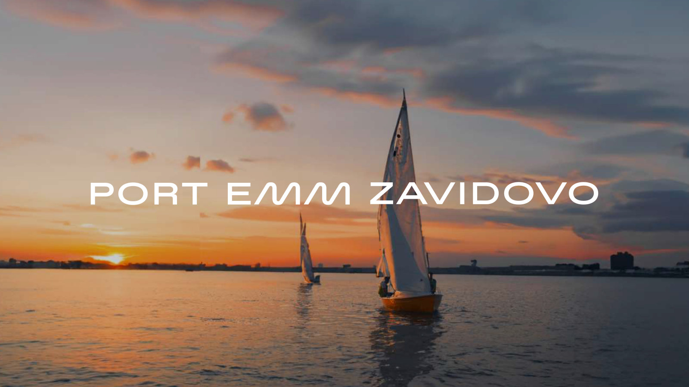
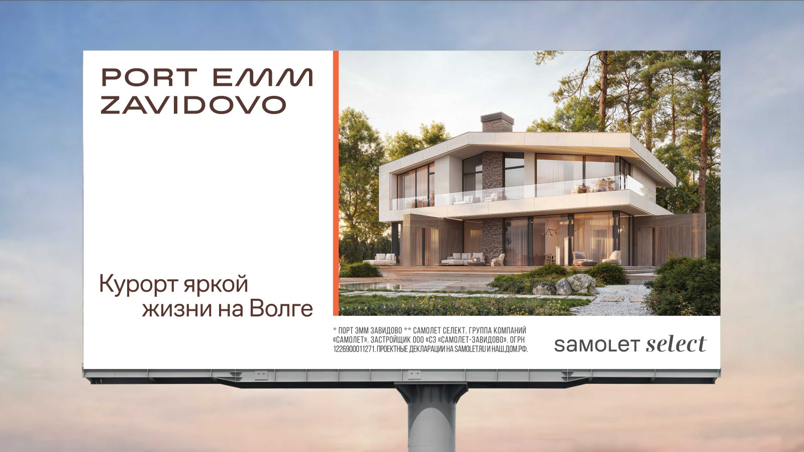
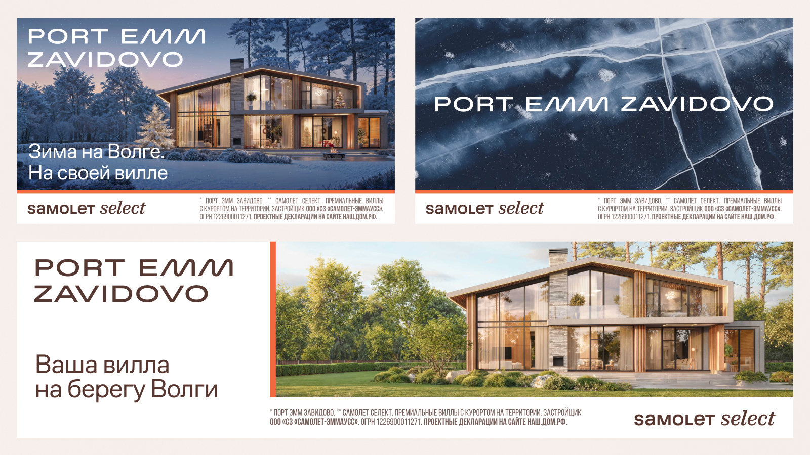
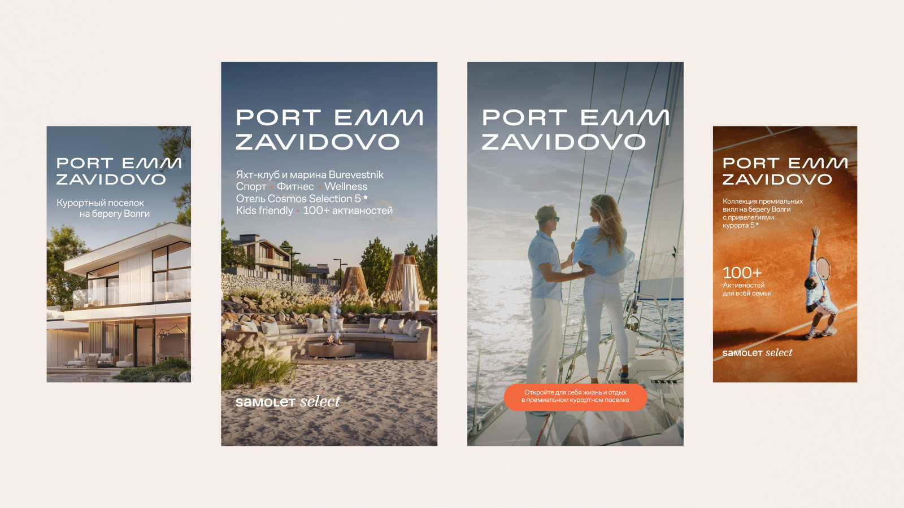
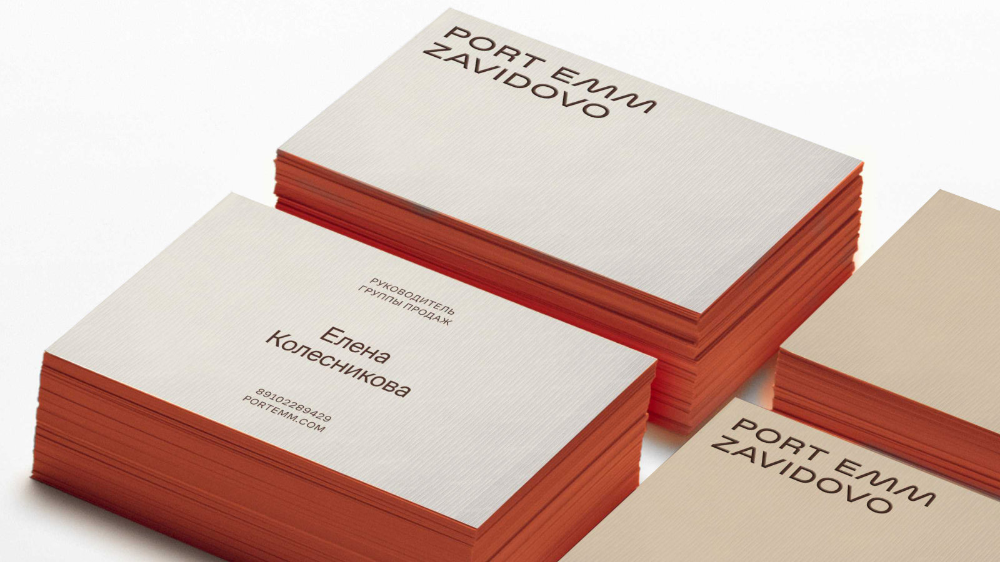
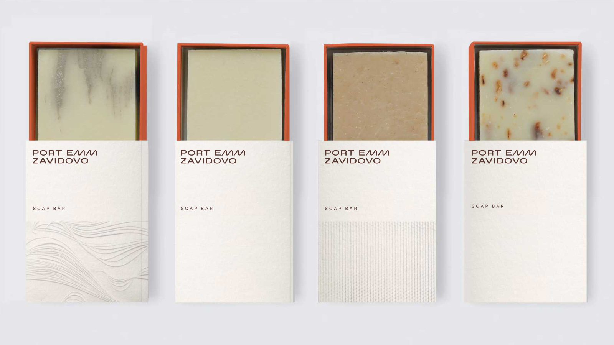
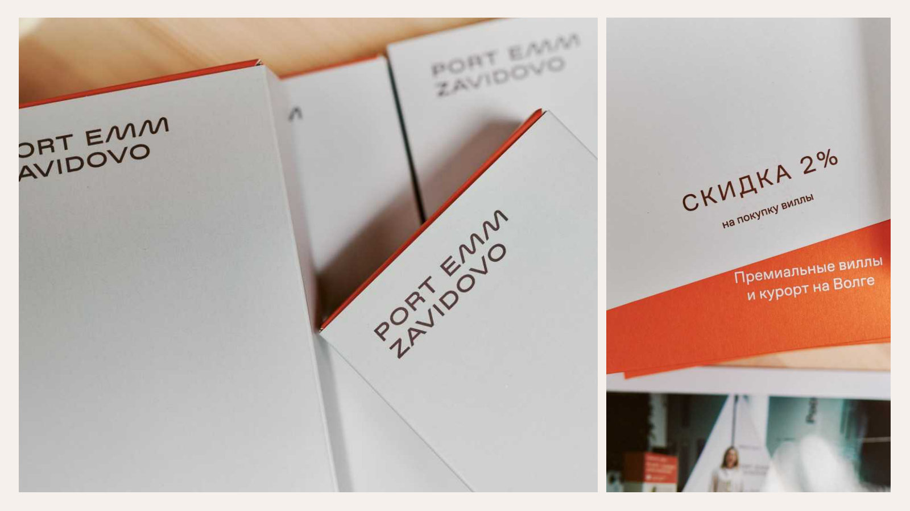
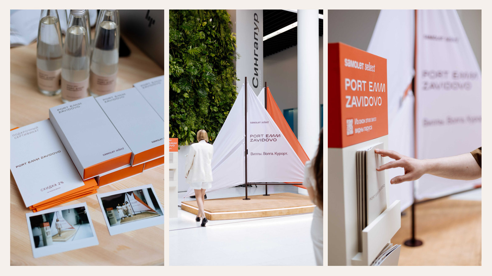

03
2024 · Ausgewähltes Projekt
Port Emm Zavidovo
Eine lebendige Lifestyle-Identität, inspiriert von der Wolga, dem Licht des Sonnenuntergangs, der Resortkultur und der Leichtigkeit des Lebens am Wasser.
Markensystem · Art Direction · Immobilienmarketing







